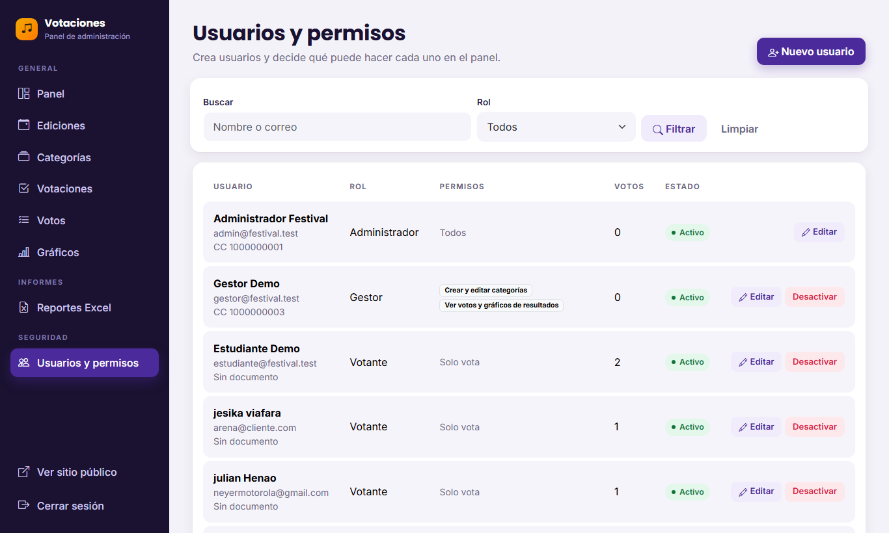
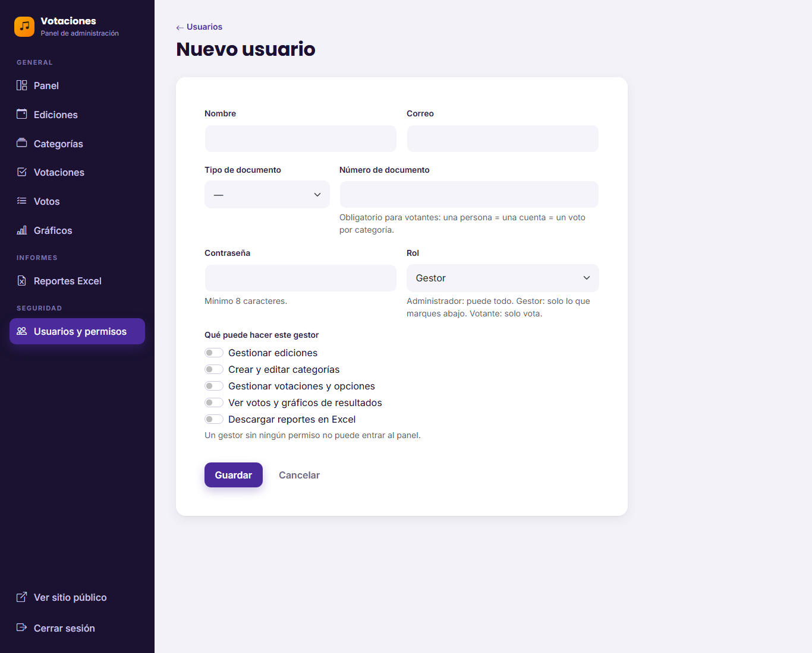
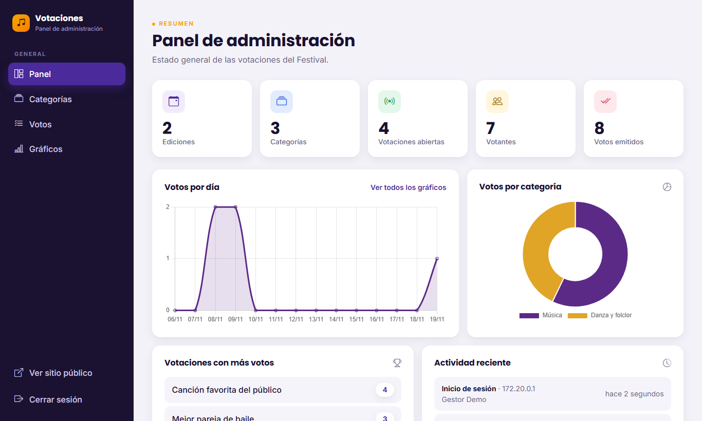
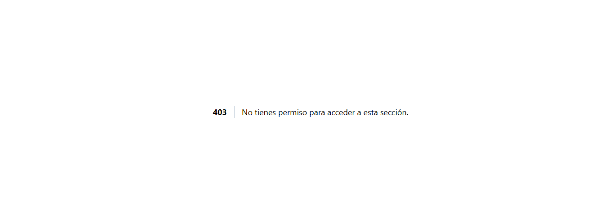
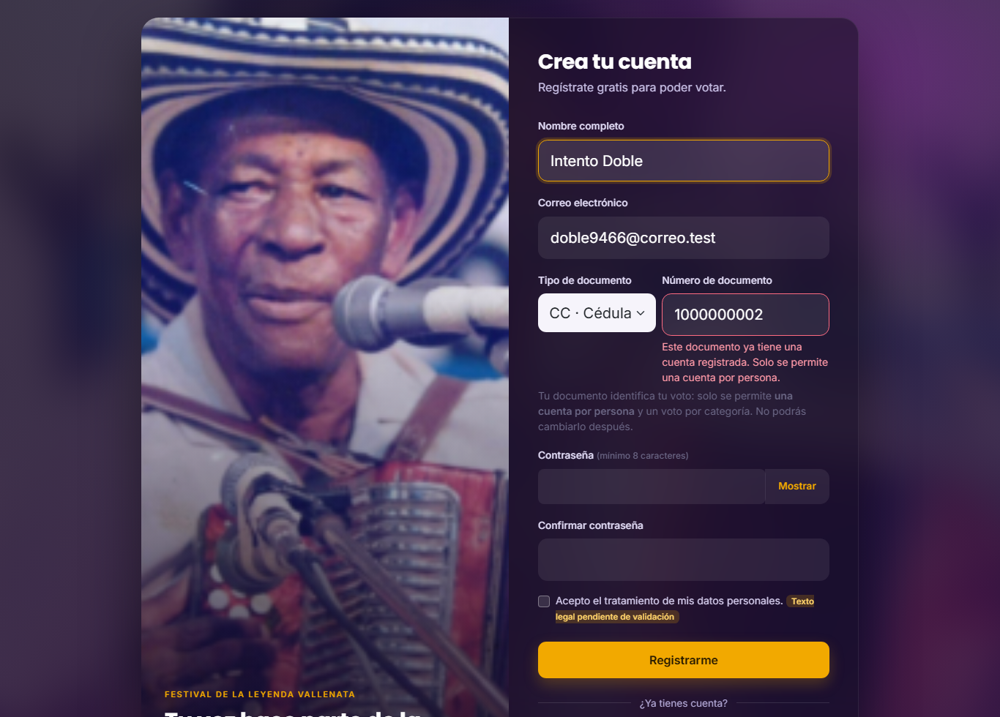
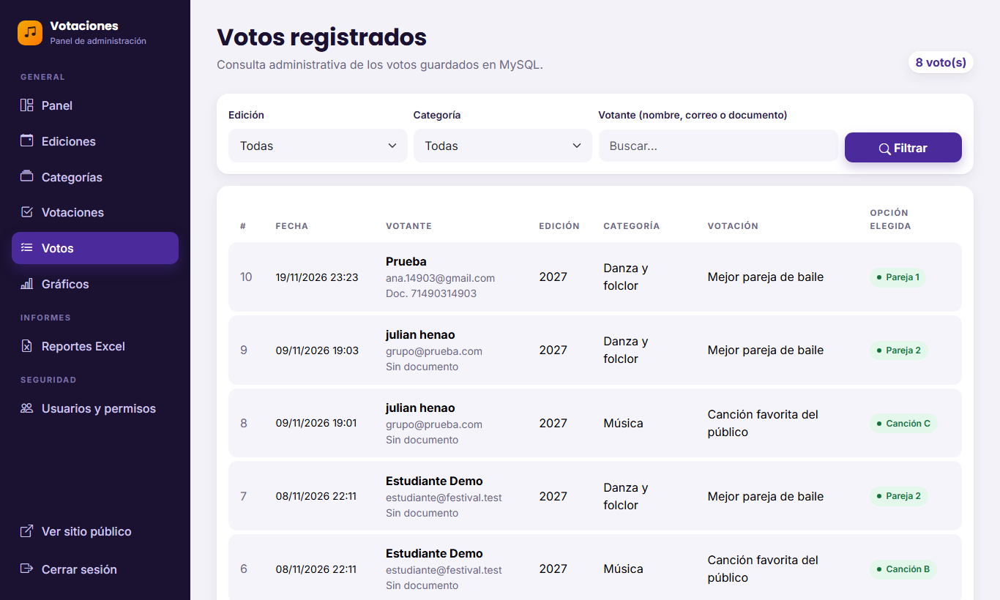
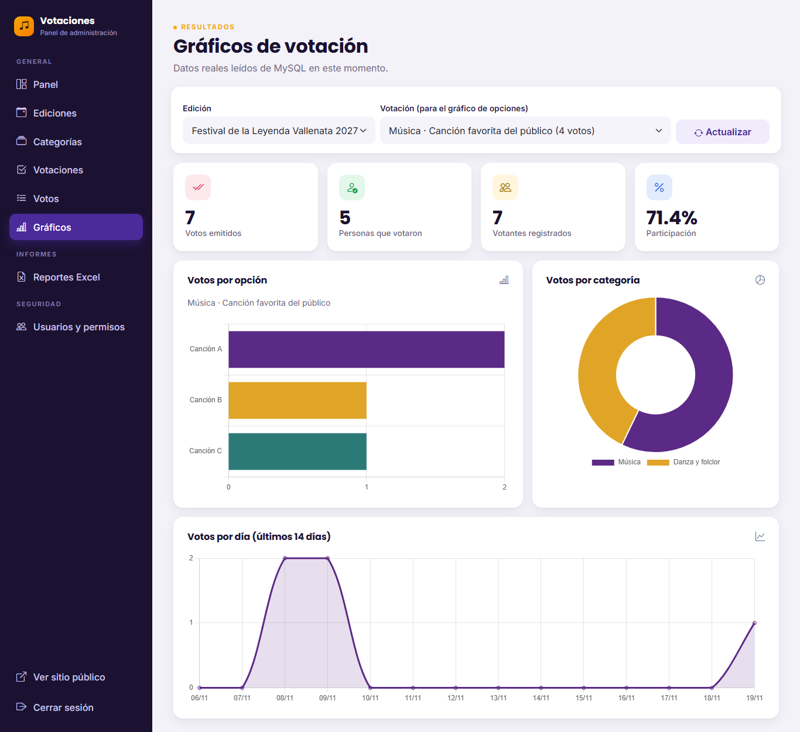
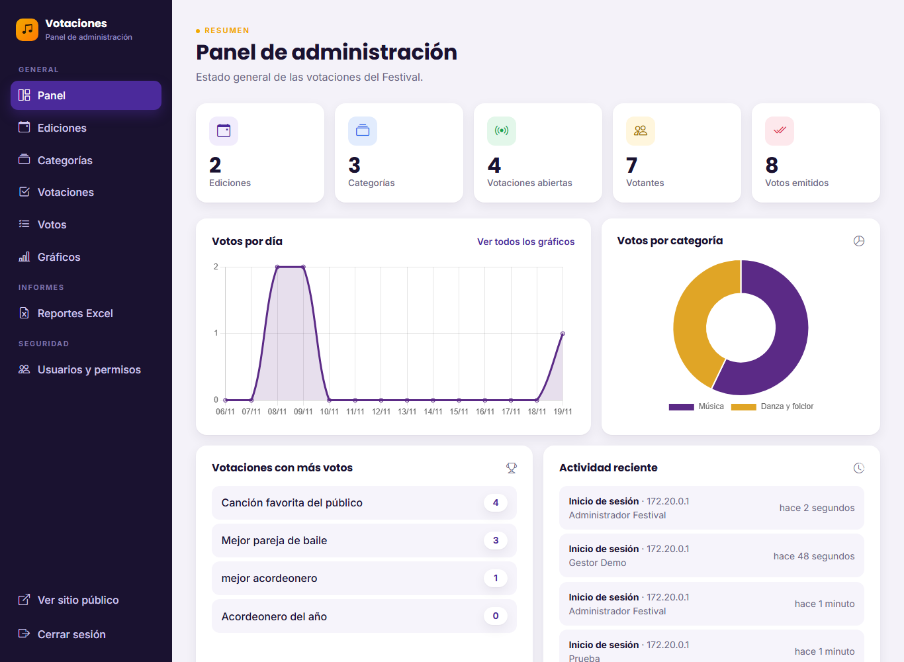

| Institución | Fundación Universitaria del Área Andina |
| Asignatura | Desarrollo Web |
| Proyecto | Sistema Web de Votaciones – Festival de la Leyenda Vallenata 2027 |
| Entrega | Entrega final (Eje N.º 4) · Correcciones, mejoras y demostración funcional |
| Equipo | [Número o nombre del equipo] |
| Integrantes |
1. [Nombre completo del integrante 1] 2. [Nombre completo del integrante 2] 3. [Nombre completo del integrante 3] 4. [Nombre completo del integrante 4] |
| Fecha | 19 de noviembre de 2026 |
| Tecnologías | Laravel 13 (PHP 8.3) · MySQL 8.4 · Docker · Bootstrap 5 · Chart.js |
Los enlaces apuntan al repositorio del proyecto. Los datos de prueba son ficticios y la aplicación se ejecuta en localhost con Docker.
| Elemento | Información |
|---|---|
| Equipo e integrantes | [Equipo N.º / nombre] — [Integrante 1], [Integrante 2], [Integrante 3], [Integrante 4] |
| Repositorio | https://github.com/neyermotorola-boop/votaciones-festival Rama principal: main |
| README e instalación | README.md (instalación con Docker y sin Docker, configuración de MySQL, ejecución, pruebas y aportes) |
| Administración dinámica | app/Http/Controllers/Admin/EdicionController.php · CategoriaController.php · VotacionController.php |
| Usuarios y permisos | app/Http/Controllers/Admin/UsuarioController.php · app/Http/Middleware/PermisoAdmin.php · app/Models/User.php |
| Una persona = un voto | app/Http/Controllers/PublicoController.php (votar, yaVoto) · DocumentoController.php · migración 2026_11_20_000000_add_documento_to_users_and_votos.php |
| Gráficos | app/Http/Controllers/Admin/GraficosController.php · app/Services/EstadisticasVotos.php |
| Pruebas automáticas | tests/Feature/: Entrega3Test, Entrega4Test, UsuariosPermisosTest, DocumentoUnicoTest (50 pruebas) |
| Concurrencia | docs/entrega_final/prueba_concurrencia.php (PHP) |
| Video / sustentación | Duración máxima 8 minutos: presentación 1 · demostración 4 · preguntas 2 · cierre 1. Enlace: [https://... enlace directo al video] |
La retroalimentación de la Entrega N.º 3 pidió siete acciones para la entrega final. A continuación se indica qué se hizo en cada una y dónde se puede verificar.
| Observación del docente | Qué se hizo | Evidencia |
|---|---|---|
| Revisar la arquitectura tecnológica (guía: Django y Python; proyecto: Laravel y PHP) | Se mantiene Laravel y PHP, tecnología acordada con el docente. Se documenta la equivalencia de componentes (MVC ↔ MVT, Eloquent ↔ ORM, migraciones, composer.json ↔ requirements.txt, PHPUnit) y las ventajas y limitaciones de la elección. |
Sección 4.1 · README «Decisión tecnológica» |
| Mantener y fortalecer las restricciones de un voto por usuario, categoría y edición | La regla ahora protege a la persona: documento único, correo real único y documento guardado en cada voto, además de la transacción con bloqueo y la restricción única de MySQL. El modelo Voto deriva edición y categoría de la votación. |
Sección 4.4 · pruebas DocumentoUnicoTest |
| Comprobar que nuevas ediciones se configuren desde la administración sin modificar el código | Flujo completo desde el panel: nueva edición (año sugerido), copiar la estructura de una edición anterior (categorías, votaciones y opciones en borrador), activar, abrir votación. Sin seeders ni cambios de código. | Sección 4.2 · Entrega4Test |
| Fortalecer la documentación del repositorio (instalación, configuración y ejecución) | README ampliado: Docker y sin Docker, configuración de MySQL, migraciones y datos de prueba, cuentas de demostración, estructura de archivos, seguridad, pruebas y guion de demostración. | README.md |
| Documentar los aportes de cada integrante | Tabla de aportes en el README y en la sección 9 de este informe; comprobable con git shortlog -sn. |
Sección 9 · README «Aportes del equipo» |
| Mantener las pruebas y repetir las de concurrencia tras cualquier modificación | 50 pruebas automáticas (todas pasan) y prueba de concurrencia en PHP repetida sobre MySQL tras los cambios: 10 solicitudes simultáneas → 1 voto registrado y 9 rechazadas. | Sección 7 |
| Preparar una demostración funcional (administración dinámica, votos, validaciones y resultados) | Guion de 8 minutos con las 7 funcionalidades, datos de prueba preparados y cuentas por rol. Se añadieron gráficos de votación para la consulta de resultados. | Secciones 5, 6 y 8 |
La guía de la asignatura menciona Django y Python. El proyecto se mantiene en Laravel (PHP), por acuerdo con el docente. Los conceptos son equivalentes y los requisitos funcionales y de datos (reglas de votación, restricciones en MySQL, API, pruebas) son independientes del lenguaje.
| Django (MVT) | Laravel (MVC) | En este proyecto |
|---|---|---|
| Model / ORM | Modelos Eloquent | app/Models/ (Edicion, Categoria, Votacion, Opcion, Voto, User) |
| View (lógica) | Controlador | app/Http/Controllers/ |
| Template | Vista Blade | resources/views/ |
urls.py | Rutas | routes/web.php, routes/api.php |
makemigrations / migrate | Migraciones | database/migrations/ · php artisan migrate |
requirements.txt | composer.json + composer.lock | Dependencias y versiones fijas |
| Sitio de administración | Panel propio con permisos | /admin (ediciones, categorías, votaciones, usuarios, gráficos) |
manage.py test | PHPUnit | php artisan test |
Ventajas de la elección: autenticación, validación, protección CSRF, migraciones, ORM y pruebas integrados; transacciones y bloqueo de filas para garantizar la regla de votación; MySQL 8 sin configuración extra; Docker para ejecutar todo con un comando. Limitaciones reconocidas: curva de aprendizaje de las convenciones y, para picos muy altos de votos, la necesidad de añadir caché y colas (la restricción de MySQL garantiza la regla en cualquier caso).
Una nueva edición se configura solo desde el panel, sin modificar código ni ejecutar seeders:
Verificado con las pruebas «nueva edición se configura desde la administración y recibe votos» y «nueva edición puede copiar estructura de la anterior».
El administrador crea usuarios y decide qué puede hacer cada uno (Admin → Usuarios y permisos). Hay tres roles: administrador (todo), gestor (solo lo asignado) y votante (solo vota).
| Permiso del gestor | Habilita |
|---|---|
ediciones | Gestionar ediciones |
categorias | Crear y editar categorías |
votaciones | Gestionar votaciones y opciones |
resultados | Ver votos y gráficos de resultados |
reportes | Descargar reportes Excel |
Cada sección del panel se protege en el servidor con el middleware PermisoAdmin; el menú lateral solo muestra lo permitido y un acceso no autorizado devuelve 403. Las cuentas se activan y desactivan sin borrarlas (conservan su historial) y el administrador no puede desactivarse ni quitarse el rol a sí mismo.
$ok = $permiso === 'panel' ? $user?->tieneAccesoPanel() : $user?->puede($permiso); abort_unless($ok, 403, 'No tienes permiso para acceder a esta sección.');




/admin/ediciones sin permiso y recibe 403.Para impedir que alguien vote varias veces creando cuentas nuevas, el voto se liga a la persona mediante su documento de identidad y su correo real:
| N.º | Control | Cómo funciona |
|---|---|---|
| 1 | Documento único | El registro exige tipo (CC, CE, TI, PA) y número. Se normaliza (sin espacios, puntos ni guiones) y users.documento es único: un documento no puede tener dos cuentas. El votante no puede cambiarlo después. |
| 2 | Correo real único | users.email_canonico (único) ignora mayúsculas, alias +etiqueta y puntos de Gmail: juan.perez+2@gmail.com y juanperez@gmail.com son la misma persona. |
| 3 | Documento en el voto | votos.documento con restricción UNIQUE (edicion_id, categoria_id, documento): MySQL rechaza un segundo voto del mismo documento aunque se cambie de cuenta. |
| 4 | Validación y bloqueo | El servidor revisa por cuenta y por documento (PublicoController::yaVoto) dentro de una transacción con lockForUpdate; existe además la restricción (user_id, edicion_id, categoria_id). |
| 5 | Cuentas anteriores | Las cuentas sin documento deben registrarlo (/mi-documento) antes de votar. |
Schema::table('users', function (Blueprint $table) {
$table->string('tipo_documento', 4)->nullable()->after('email');
$table->string('documento', 15)->nullable()->unique()->after('tipo_documento');
$table->string('email_canonico', 190)->nullable()->unique()->after('email');
});
Schema::table('votos', function (Blueprint $table) {
$table->string('documento', 15)->nullable()->after('opcion_id');
$table->unique(['edicion_id', 'categoria_id', 'documento'], 'votos_unico_documento_edicion_categoria');
});
app/Http/Controllers/PublicoController.php
// ¿Esta persona ya votó en la categoría? Se comprueba por cuenta y también por documento.
public static function yaVoto(User $user, int $categoriaId): bool
{
return Voto::where('categoria_id', $categoriaId)
->where(fn ($q) => $q->where('user_id', $user->id)
->orWhere(fn ($w) => $w->whereNotNull('documento')->where('documento', $user->documento)))
->exists();
}
Estado de las migraciones y de los índices en MySQL 8.4 (Docker):
2026_11_08_000000_add_edicion_categoria_to_votos_table ............. [2] Ran 2026_11_19_000000_add_permisos_to_users_table ...................... [3] Ran 2026_11_20_000000_add_documento_to_users_and_votos ................. [4] Ran votos UNIQUE votos_unico_usuario_edicion_categoria (user_id, edicion_id, categoria_id) votos UNIQUE votos_unico_documento_edicion_categoria (edicion_id, categoria_id, documento) users UNIQUE users_documento_unique · users_email_canonico_unique · users_email_unique

1.000.000.002) con otro correo es rechazado.admin+dos@festival.test se reconoce como el mismo correo que admin@festival.test y se rechaza.
En Admin → Gráficos (permiso «resultados») se visualizan datos reales leídos de MySQL, filtrables por edición y votación: votos por opción (barras con porcentaje), votos por categoría (dona), votos por día (línea, últimos 14 días) y totales con el porcentaje de participación. El panel principal muestra además votos por día y por categoría. Los gráficos se dibujan con Chart.js a partir de consultas agregadas (app/Services/EstadisticasVotos.php).


| N.º | Funcionalidad | Cómo se demuestra | Dónde |
|---|---|---|---|
| 1 | Administración dinámica | Crear edición (copiando estructura), categoría, votación y opciones desde el panel; aparece en el sitio público sin tocar código. | 4.2 |
| 2 | Usuarios | Registro con documento, inicio y cierre de sesión; permisos diferenciados: administrador, gestor (permisos individuales) y votante; 403 sin permiso. | 4.3 · 4.4 |
| 3 | Votación | Elegir una votación abierta, seleccionar opción, confirmar y ver «Voto registrado». | Entrega 3 · 4.4 |
| 4 | Control de duplicados | Segundo voto en la categoría rechazado; documento y correo únicos; restricciones únicas en MySQL; prueba de concurrencia. | 4.4 · 7 |
| 5 | Resultados | «Mis votos», consulta administrativa con documento, gráficos, reporte Excel y API GET, todo desde MySQL. | 4.4 · 4.5 |
| 6 | Base de datos | MySQL 8.4 en Docker; estructura creada con migraciones; persistencia en el volumen dbdata; consultas en phpMyAdmin. | 6 |
| 7 | Validaciones | Formularios con mensajes, rutas protegidas por rol y permiso, CSRF (419), límite de intentos (429) y manejo de situaciones incorrectas. | 4.3 · 4.4 · 7 |
| Situación | Respuesta del sistema |
|---|---|
| Registro con documento o correo ya usado (incluido alias de correo) | Error junto al campo; no se crea la cuenta |
| Registro sin tipo o número de documento, o con formato inválido | Error de validación |
| Votar sin documento registrado | Redirige a /mi-documento |
| Segundo voto en la misma categoría y edición | «Ya votaste en esta categoría…» |
| Gestor abre una sección sin permiso / votante abre el panel | 403 |
| Usuario desactivado inicia sesión | Se rechaza el ingreso |
| Votación cerrada o en borrador, categoría deshabilitada u opción ajena | Se rechaza el voto |
| Formulario sin token CSRF / demasiados intentos | 419 / 429 |
El sistema completo se ejecuta con docker compose up --build. El contenedor de la aplicación espera a MySQL, ejecuta las migraciones y carga los datos de prueba.
| Servicio | Imagen | Puerto | Función |
|---|---|---|---|
votaciones_app | PHP 8.3 + Apache | 8080 | Aplicación Laravel |
votaciones_db | mysql:8.4 | 3307 → 3306 | Base de datos (volumen dbdata) |
votaciones_pma | phpmyadmin:5 | 8081 | Consulta de tablas y datos |
Consultas de verificación ejecutadas en MySQL:
-- Debe devolver 0 filas: ningún usuario con dos votos en la misma categoría y edición SELECT user_id, edicion_id, categoria_id, COUNT(*) FROM votos GROUP BY user_id, edicion_id, categoria_id HAVING COUNT(*) > 1; → filas_duplicadas = 0 -- Gestor con permisos individuales guardados en JSON SELECT email, rol, permisos, activo FROM users WHERE rol = 'gestor'; → gestor@festival.test | gestor | ["categorias", "resultados"] | 1
Las pruebas se ejecutan con php artisan test y se repiten después de cualquier modificación. Resultado final: 50 pruebas, 203 aserciones, todas aprobadas.
| Archivo | Pruebas | Qué verifica |
|---|---|---|
Entrega3Test.php | 10 | CP-01 a CP-10: voto válido, duplicado rechazado, otra categoría permitida, sin sesión, categoría no habilitada, opción ajena, historial, consulta administrativa, restricción en la base y API. |
Entrega4Test.php | 7 | Nueva edición desde el panel, regla por edición, copiar estructura, permisos de administrador e integridad del modelo Voto. |
UsuariosPermisosTest.php | 11 | Creación de gestor, acceso por permiso (403), desactivación de cuentas, validaciones y conteos reales de los gráficos. |
DocumentoUnicoTest.php | 10 | Documento obligatorio y normalizado, documento y correo únicos (con alias), documento guardado en el voto, restricción de MySQL, documento inmodificable y búsqueda por documento. |
| Otras | 12 | Reglas generales de votación, reporte Excel y ediciones públicas. |
Documento Unico ✔ El registro exige tipo y numero de documento ✔ El documento se guarda normalizado ✔ No se puede crear otra cuenta con el mismo documento ✔ No se puede crear otra cuenta con el mismo correo aunque use alias ✔ El voto guarda el documento de quien voto ✔ Mysql rechaza dos votos del mismo documento en la misma categoria ✔ Quien ya voto no vota de nuevo aunque cambie su documento de cuenta ✔ Cuenta sin documento debe registrarlo antes de votar ✔ El votante no puede cambiar su documento una vez registrado ✔ El admin puede buscar votos por documento ... OK (50 tests, 203 assertions)
Script en PHP (docs/entrega_final/prueba_concurrencia.php): registra un usuario con documento y envía 10 solicitudes simultáneas de voto a la misma categoría, contra la aplicación en Docker con MySQL 8.4.
$ php docs/entrega_final/prueba_concurrencia.php 4 conc32541@festival.test 10 Solicitudes simultáneas enviadas: 10 VOTO REGISTRADO: 1 RECHAZADO (ya votaste en la categoría): 9 OK: la regla un voto por categoría se cumplió. SELECT u.email, v.documento, COUNT(*) votos FROM votos v JOIN users u ON u.id = v.user_id ... → conc32541@festival.test | 980614452 | 1
Las cuentas y votos de esta prueba se eliminaron después para dejar intactos los datos de demostración.
| Momento | Tiempo | Actividad |
|---|---|---|
| Presentación | 1 min | Identificación del equipo y explicación breve del sistema (Laravel, MySQL 8 y Docker; regla: una persona, un voto). |
| Demostración funcional | 4 min | (1) Admin crea edición copiando estructura y abre una votación · (2) registro con documento, sesión y permisos (gestor, 403) · (3) voto con confirmación · (4) segundo voto rechazado, documento repetido y consulta SQL sin duplicados · (5) Mis votos, Admin → Votos, gráficos y API · (6) MySQL y Docker · (7) validaciones y php artisan test (50 de 50). |
| Preguntas del docente | 2 min | Respuesta a una o varias preguntas elegidas por el docente. |
| Cierre | 1 min | Estado final del proyecto y mejoras pendientes (sección 9). |
admin@festival.test / Admin12345 · Gestor (categorías y resultados): gestor@festival.test / Gestor12345 · Votante: votante@festival.test / Votante12345. Sitio: http://localhost:8080 · phpMyAdmin: http://localhost:8081.El sistema permite configurar ediciones, categorías, votaciones y opciones desde el panel; administra usuarios con permisos individuales; registra votos con confirmación; garantiza una persona, una cuenta y un voto por categoría y edición con controles en el código y en MySQL; y consulta resultados reales mediante tablas, gráficos, reporte Excel y API GET. Todo se ejecuta con Docker y está cubierto por 50 pruebas automáticas.
| Integrante | Rol | Aportes principales |
|---|---|---|
| [Nombre del integrante 1] | [Rol] | [Módulos, pantallas, pruebas o documentación] |
| [Nombre del integrante 2] | [Rol] | [Aportes] |
| [Nombre del integrante 3] | [Rol] | [Aportes] |
| [Nombre del integrante 4] | [Rol] | [Aportes] |
Los aportes individuales pueden verificarse en el historial del repositorio (git shortlog -sn).